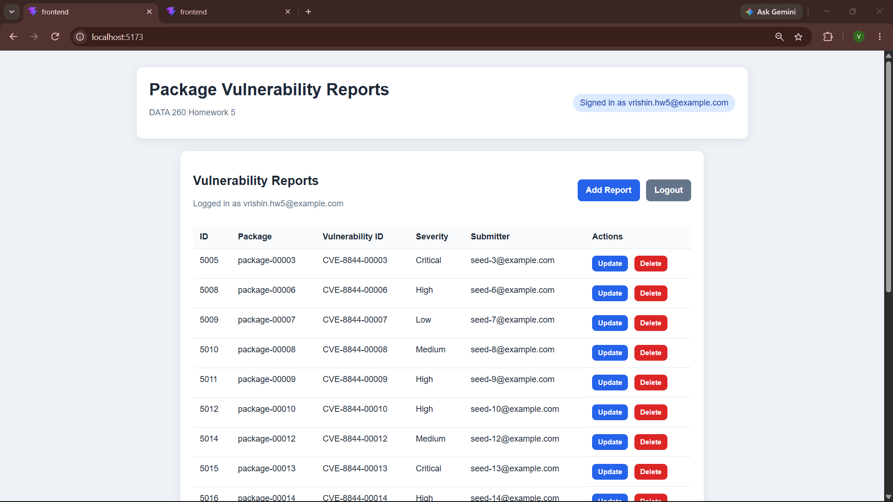
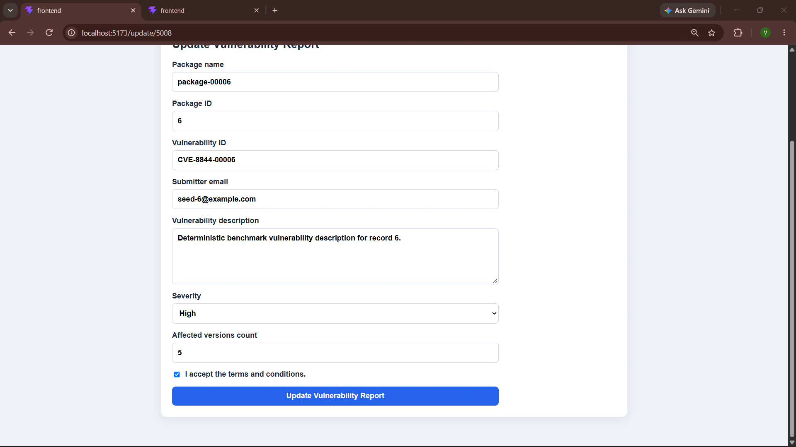
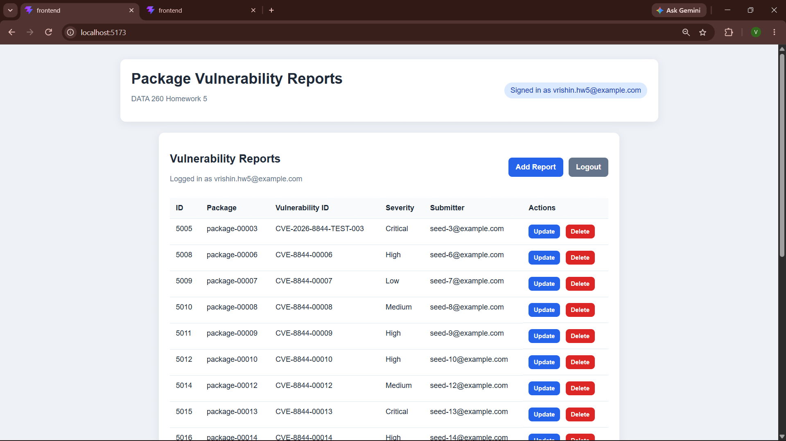
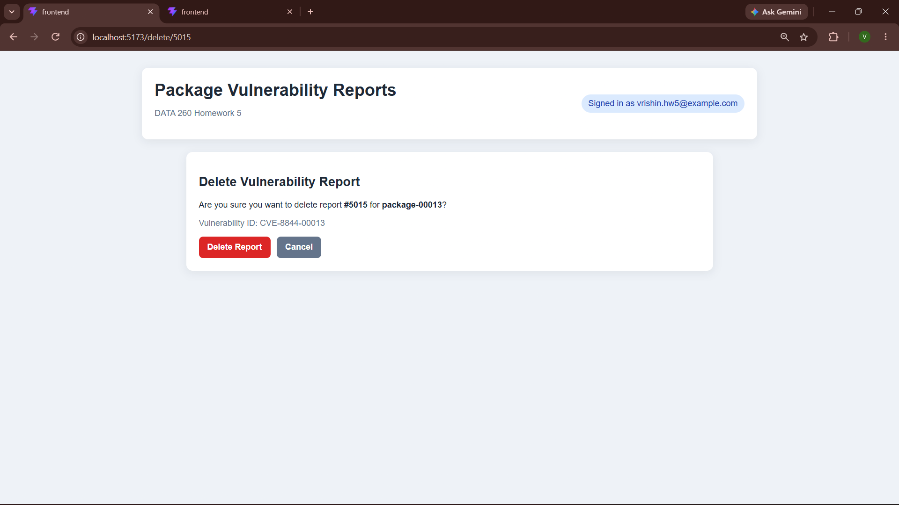
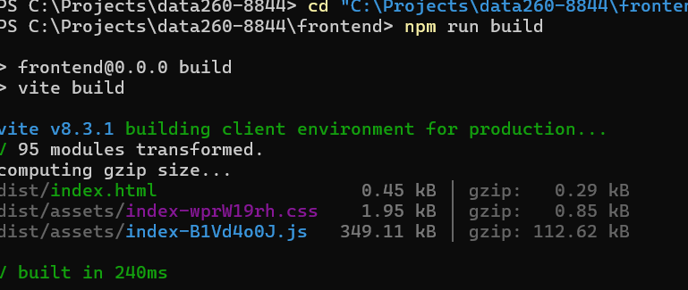

Student: Vrishin KP
Project: Package Vulnerability Reporting Platform
Technology: FastAPI, SQLAlchemy, MySQL, React, Redux Toolkit, Axios, and Vite
The main goal of this homework was to improve the existing vulnerability reporting application by connecting the React frontend to Redux Toolkit. In the earlier version, some report information and CRUD actions were handled directly inside individual pages. For this homework, I moved the main report state and report operations into Redux so that the application has a more organized and predictable data flow.
This change also helped connect the frontend and backend more clearly. The React pages collect user input, Redux manages the application state, Axios sends the request, and FastAPI performs the database operation. I also added the new HW5 fields required by the backend, including the package ID and affected versions count.
I implemented the following features and checked each one through the running application:
One important part of the work was making sure that the update form did not only display the new fields but also sent them to the backend. During testing, I found that the affected-version count was still being saved as zero. I corrected the backend update function and then verified that the value was saved and displayed correctly.
Redux is now used as the central place for the report list and report
operations. When a user performs an action, the page calls a handler in
App.jsx. That handler dispatches a Redux thunk. The thunk calls
the Axios API function, and the result is stored back in the Redux state.
This structure keeps the page components focused on displaying forms and collecting input. It also means that the report list can be updated after creating, editing, or deleting a report without keeping separate copies of the same data in multiple components.
| Operation | Frontend flow | Backend result |
|---|---|---|
| Load | fetchReports() |
GET vulnerability reports |
| Create | addReport(payload) |
POST a new vulnerability report |
| Update | editReport({ id, payload }) |
PUT updated report data |
| Delete | removeReport(id) |
DELETE the selected report |
I tested the application through the browser using the local React frontend and FastAPI backend. The tests were performed after logging in with the demo account. The results below show what happened during each test.
| Test | Result | Evidence |
|---|---|---|
| User login and report loading | Passed | The authenticated Home page opened and displayed vulnerability reports. |
| Update report | Passed | The affected versions count was changed to 5 and displayed correctly after the update. |
| Create report | Passed | A new report with a unique vulnerability ID appeared in the report list. |
| Delete report | Passed | The selected report was deleted and no longer appeared on the Home page. |
| Production build | Passed | Vite completed successfully with 95 modules transformed. |
The following screenshots document the main tests performed in the browser. Sensitive information such as passwords and authentication tokens was not included in the screenshots.





npm run build.
The following files were important to the HW5 implementation. Each file contributed to a different part of the frontend or backend workflow.
frontend/src/App.jsx -
connects the application pages to Redux actions and selectors.
frontend/src/features/reports/reportsSlice.js -
stores report state and defines the asynchronous Redux thunks.
frontend/src/store/store.js -
configures the Redux store for the React application.
frontend/src/pages/CreateRecord.jsx -
collects the fields needed to create a vulnerability report.
frontend/src/pages/UpdateRecord.jsx -
loads an existing report and submits updated values.
frontend/src/pages/DeleteRecord.jsx -
displays the delete confirmation and calls the Redux delete handler.
code/web_application/crud_hw4.py -
performs the database create, read, update, and delete operations.
code/web_application/schemas.py -
validates the request and response data used by the API.
The main issue found during testing was that the affected versions count appeared as zero after updating a report. At first, the frontend form was sending the value, but the backend update function was not assigning the value to the database object.
I corrected the backend update logic so that it saves
affected_versions_count and updates the report timestamp.
After restarting the backend, I repeated the browser test and confirmed
that the value 5 was saved and displayed correctly.
Another small issue occurred while editing the delete page. The file was
accidentally opened from a nested frontend path. I moved the corrected file
into the actual frontend/src/pages directory, removed the
accidental duplicate folder, rebuilt the frontend, and confirmed that the
build still passed.
This submission was prepared on the HW5 development branch. The final
version will be identified in Git using the annotated submission tag
hw5.
| Repository | Viki2183/data260-8844 |
|---|---|
| Branch | hw5-development |
| Submission tag | hw5 |
| Report location | reports/hw05/ |
Homework 5 was completed by integrating Redux Toolkit into the existing vulnerability reporting application. The report list and CRUD operations now follow a consistent Redux-based data flow.
The browser tests confirmed that a user can log in, view reports, create a new report, update an existing report, save the affected versions count, and delete a report. The final Vite production build also completed successfully, confirming that the frontend code is valid and can be bundled for deployment.